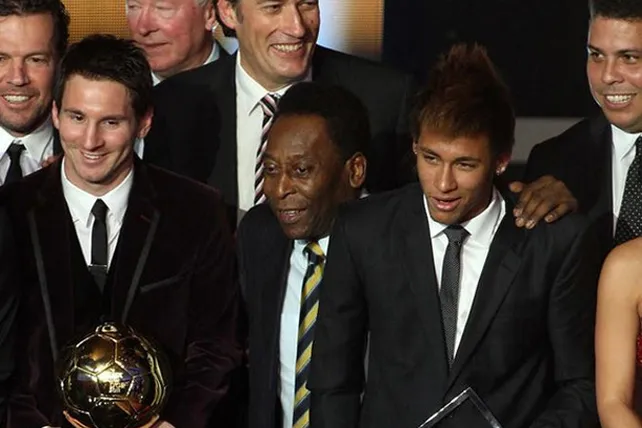
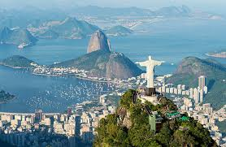
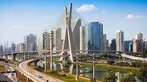
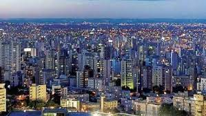
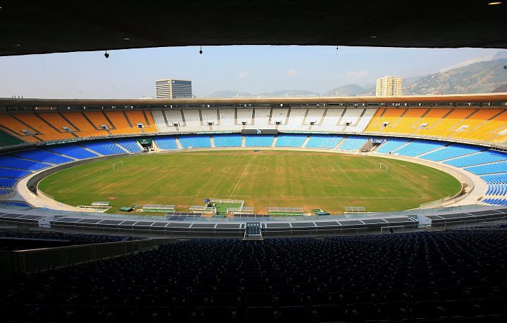
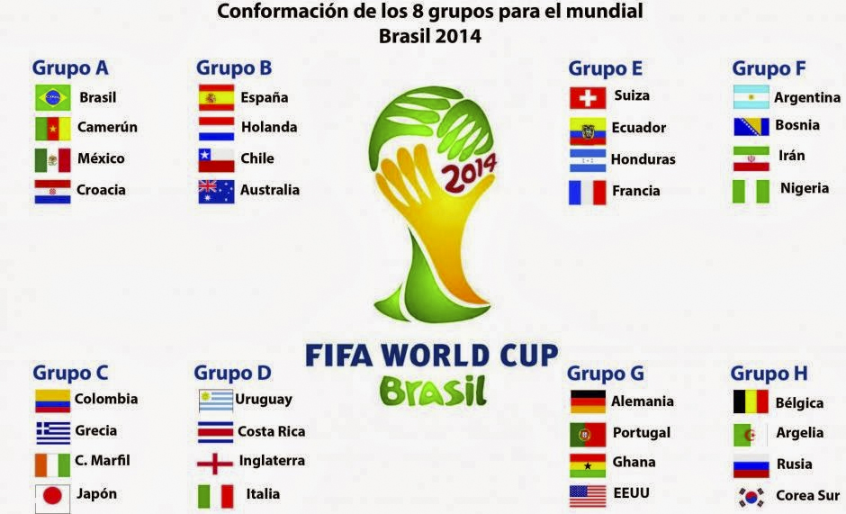
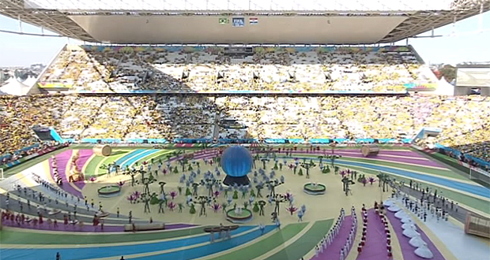

LEMA
"Juntos num só ritmo" o "Juntos al mismo ritmo", una frase que hace alusión a la imagen musical y tropical de Brasil y a la concentración en el país de aficionados de diferentes selecciones, es el lema oficial escogido para el Mundial que el gigante latino organizará en 2023.
El lema fue anunciado por la FIFA, el Comité Organizador Local (COL) del Mundial y el Gobierno brasileño,

CIUDADES ANFITRIONAS

La ciudad de Río de Janeiro es la
principal ciudad de este mundial 2023

São Paulo con varias instituciones
culturales y una rica tradición arquitectónica.

Belo Horizonte es considerada la
cuarta ciudad más grande en la población
brasileña con un gran atractivo turistico
ESTADIOS PRINCIPALES
El mundial de la FIFA WORLD CUB 2023 que se disputara
en BRASIL tendrá comienzo este 12 de junio del 2023
en el estadio Arena corinthians y su final se disputara
el 13 de julio 2023 en el estadio El maracaná.

NOMBRE: Arena Corinthias
CAPACIDAD: 61606 espectadores
UBICACION: Ciudad de sao paulo, Brasil.

NOMBRE: Maracaná
CAPACIDAD: 74738 espectadores
UBICACION: Rio de janeiro, Brasil
EQUIPOS QUE DISPUTARAN ESTE MUNDIAL
El Mundial de la FIFA 2023 sera celebrado en Brasil y sera llevado a cabo del 12 de junio al 13 de julio de este año. sera la vigésima edición del torneo y contara con la participación de 32 equipos de todo el mundo.
El torneo estará lleno de emociones, sorpresas y momentos destacados.
Los partidos se llevaron a cabo en 12 sedes diferentes en todo Brasil, incluyendo ciudades como Río de Janeiro, São Paulo, Brasilia y Salvador

CEREMONIA DE INAGURACION
La ceremonia de inauguración del Mundial
de Futbol Brasil 2023, la cual tuvo una duración de 26 minutos

PATROCINADORES DE LA FIFA